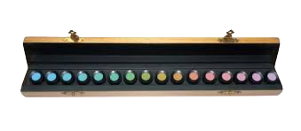
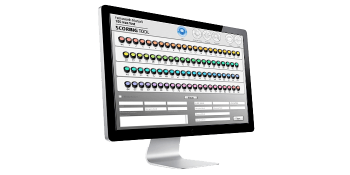
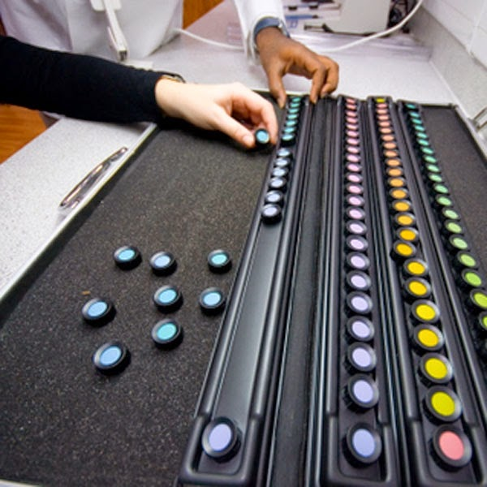

Test de Farnsworth

¿Qué es?
La prueba de farnsworth D15 es un examen que sirve para clasificar las alteraciones de la visión del color, permitiendo conocer exactamente el tipo de defecto al color.
¿En qué casos requiere?
Esta prueba está indicada a realizarse en los siguientes casos:
- Pacientes con inflamación o sospecha de inflamación del nervio óptico.
- Pacientes a quienes se les ha realizado la prueba general de color con test de Ishihara y los resultados han presentado alguna anormalidad.
- Pacientes con consumo de cloroquina y otras medicaciones que pueden causar toxicidad macular.
- Pacientes con inflamación o sospecha de inflamación del nervio óptico.

